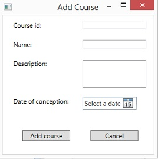

Welcome to Schedule maker application
On this page you can find everything you need to know
for simpler and more efficiant use of this application.
The application offers creating new schedule and manipulation
of existing schedule.
When you select an object in window, you can press key "F1" in order to open this
help on certain paragraph to see details about that window.
Next paragraphs describe all the actions a user can make in
order to manipulate data.
Following list shows potential actions.
If you want to know more about each action, you can
press left mouse button on the link.
Creating entities:
Listing existing entities:
Changing data:
Removing entities:
Schedule manipulation:
Help and demo:
Creating software
There are two ways a user can create new software. The first
way is via action from main menu, the second one is action
from the window which lists all software.
The first way: Left mouse click on the 'Classroom' option in main menu. Two options are available and
the relevant one is 'Add new software'. Left mouse click opens new window which offers new software data input.
The second way: This way implies you've chosen this option via 'List all software' window. If you haven't, the paragraph 'List all software' gives example how to do it.
To add new software, left mouse click button 'Add new software'. This opens new window which offers new software data input.
Note:
The data fiels must be filled properly. If you want to save new created software left mouse click button 'Add software'. This way all the fields are reset so that many software can be created one after another. You can close creating new software by left mouse clicking the 'X' button or alternatively the 'Cancel' button.
This image shows how Creating new software window looks. No field can be left blank and
fields 'Year of publication' and 'Price' must be numbers. You can choose one of operating systems by
left mouse clicking on the circle next to OS name.
Left mouse click 'Add software' to create software or left mouse click 'Cancel' to cancel creating new software.
Creating course
There are two ways a user can create new course. The first
way is via action from main menu, the second one is action
from the window which lists all courses.
The first way: Left mouse click on the 'Course' option in main menu. Two options are available and
the relevant one is 'Add new course'. Left mouse click opens new window which offers new course data input.
The second way: This way implies you've chosen this option via 'List all courses' window. If you haven't, the paragraph 'List all courses' gives example how to do it.
To add new course, left mouse click button 'Add new course'. This opens new window which offers new course data input.
Note:
The data fiels must be filled properly. If you want to save new created course, left mouse click button 'Add course'. This way all the fields are reset so that many courses can be created one after another. You can close creating new course by left mouse clicking the 'X' button or alternatively the 'Cancel' button.

This image shows how Creating new course window looks. No field can be left blank.
Left mouse click 'Add course' to create software or left mouse click 'Cancel' to cancel creating new course.
There are two ways a user can create new subject. The first
way is via action from main menu, the second one is action
from the window which lists all subjects.
The first way: Left mouse click on the 'Subject' option in main menu. Two options are available and
the relevant one is 'Add new subject'. Left mouse click opens new window which offers new subject data input.
The second way: This way implies you've chosen this option via 'List all subjects' window. If you haven't, the paragraph 'List all subjects' gives example how to do it.
To add new subject, left mouse click button 'Add new subject'. This opens new window which offers new subject data input.
Note:
The data fiels must be filled properly. If you want to save new created subject, left mouse click button 'Add subject'. This way all the fields are reset so that many subjects can be created one after another. You can close creating new subject by left mouse clicking the 'X' button or alternatively the 'Cancel' button.
Since creating new subject needs adding software, there is
option to update existing software while creating a subject by mouse left button click on 'Click here for more'.
Since creating new subject needs adding course, there is
option to update existing course while creating a subject by mouse left double clicking
on a row in table which contains all courses.
This image shows how Creating new subject window looks. No field can be left blank and
fields 'Size of groups' and 'Duration of period' and 'Number of periods' must be numbers. You can set fields
'yes' or 'no' by left mouse clicking on circle next to them. You can choose one of operating systems by
left mouse clicking on the circle next to OS name.
Since creating subject demands setting course, you can choose course by left mouse clicking button
'Click here to add course'. A new window opens with list of all existing courses. To select one course
left mouse click on its row and then left mouse click button 'Save selected course'. If you wish to
create new course to add to the subject, you can do that by left mouse clicking button 'Add new course'.
That way, window for creating new course opens. (see the following image)
(See more:
'creating course').
Since creating subject demands setting list of software that subject has, you can choose software by left mouse
clicking button 'Click here to choose software'. New window for selecting software opens (see the following image).
Left table contains list of all software that exists in database and the left table contains
all the software you've chose for that course.
If you want to choose software from the left table, left mouse click on the row of that software.
If you want to remove software from the list, left mouse click on the row in right table.
If you wish to see details of a software and potentialy change it, click button 'Click here for more'.
If certain software can't be found on the list, you can create new one by left mouse clicking
button 'Add new software'. (see more:
'creating software')
To finish creating subject, left mouse click on button 'Add subject', or 'Cancel' if you wish to cancel
creating new subject.
Creating classroom
There are two ways a user can create new classroom. The first
way is via action from main menu, the second one is action
from the window which lists all subjects.
The first way: Left mouse click on the 'Classroom' option in main menu. Two options are available and
the relevant one is 'Add new classroom'. Left mouse click opens new window which offers new subject data input.
The second way: This way implies you've chosen this option via 'List all classrooms' window. If you haven't, the paragraph 'List all classrooms' gives example how to do it.
To add new classroom, left mouse click button 'Add new classroom'. This opens new window which offers new classroom data input.
This image shows how Creating new classroom window looks. No field can be left blank and
field 'Number of seats' must be number. You can set fields
'yes' or 'no' by left mouse clicking on circle next to them. You can choose one of operating systems by
left mouse clicking on the circle next to OS name.
Since creating classroom demands setting list of software that classroom has, you can choose software by left mouse
clicking button 'Choose software'. New window for selecting software opens (see the following image).
Left table contains list of all software that exists in database and the left table contains
all the software you've chose for that course.
If you want to choose software from the left table, left mouse click on the row of that software.
If you want to remove software from the list, left mouse click on the row in right table.
If you wish to see details of a software and potentialy change it, click button 'Click here for more'.
If certain software can't be found on the list, you can create new one by left mouse clicking
button 'Add new software'. (see more:
'creating software')
To finish creating classroom, left mouse click on button 'Add classroom', or 'Cancel' if you wish to cancel
creating new classroom.
Choosing software is enabled while (creating subject or while
(creating classroom).
The left table contains all the software which is not added to the list and the right table contains
all the software added to the list. If you want to add software to the list, find it in the right table
and mouse left click on the row with that software. If you want to remove software from the list, find it in
the right table and mouse left click on row with that software.
Listing all software
To list all software, left mouse click option 'Software' in main menu and then left mouse click option 'List all software'. Double clicking on a row in table opens a window with all the software details.
By double clicking a row in table, you are able to see details of a software and potentialy change them.
If you wish to add new software, you can do it by left mouse clicking button 'Add new software'.
See more:
Listing all courses
To list all courses, left mouse click option 'Course' in main menu and then left mouse click option 'List all courses'. Double clicking on a row in table opens a window with all the course details.
By double clicking a row in table, you are able to see details of a course and potentialy change them.
If you wish to add new course, you can do it by left mouse clicking button 'Add new course'.
See more:
To list all subjects, left mouse click option 'Subject' in main menu and then left mouse click option 'List all subjects'. Double clicking on a row in table opens a window with all the subject details.
 By double clicking a row in table, you are able to see details of a subject and potentialy change them.
If you wish to add new subject, you can do it by left mouse clicking button 'Add new subject'.
See more:
By double clicking a row in table, you are able to see details of a subject and potentialy change them.
If you wish to add new subject, you can do it by left mouse clicking button 'Add new subject'.
See more:
Listing all classrooms
To list all classrooms, left mouse click option 'Classroom' in main menu and then left mouse click option 'List all classrooms'. Double clicking on a row in table opens a window with all the classroom details.
By double clicking a row in table, you are able to see details of a classroom and potentaly change them.
To view list of software in certain classroom, left mouse click button 'View'.
If you wish to add new classroom, you can do it by left mouse clicking button 'Add new classroom'.
See more:
Updating software
There are several ways to get to updating software.
First way:
This way implies you've opened listing all software. If not, paragraph
'Listing all software' describes how to do it. Double clicking left mouse button on a row in table opens window with details of software.
Second way:
This way implies you've opened creating classroom and choosing software for that classroom.
See more: creating classroom)
Third way:
This way implies you're trying to create new subject.
(See more: creating subject)
Left mouse click on 'Change data' button allows user to change data in fields bordered with red color.
The red bordered fields can be changed. Left mouse click on 'Save changes' button saves all made changes. Data must be filled properly.
If you want to discard changes, left mouse click on button 'Back'.
Left mouse click on button 'Delete' opens dialogue for accepting deletion. To approve deletion left mouse click button 'Yes' and in contrary click 'No'.
Updating course
This way implies you've opened listing all courses. If not, paragraph
'Listing all courses'
describes how to do it. Double clicking left mouse button on a row in table opens window with details of course.
Left mouse click on 'Change data' button allows user to change data in fields bordered with red color.
The red bordered fields can be changed. Left mouse click on 'Save changes' button saves all made changes. Data must be filled properly.
If you want to discard changes, left mouse click on button 'Back'.
Left mouse click on 'Save changes' button saves all made changes. Data must be filled properly. If you want to discard changes, left mouse click on button 'Back'.
This way implies you've opened listing all subjects. If not, paragraph
'Listing all subjects'
describes how to do it. Double clicking left mouse button on a row in table opens window with details of subject.
Left mouse click on 'Change data' button allows user to change data in fields bordered with red color.
The red bordered fields can be changed. Left mouse click on 'Save changes' button saves all made changes. Data must be filled properly.
If you want to discard changes, left mouse click on button 'Back'.
Left mouse click on 'Save changes' button saves all made changes. Data must be filled properly. If you want to discard changes, left mouse click on button 'Back'.
Updating classroom
This way implies you've opened listing all classrooms. If not, paragraph
'Listing all classrooms'
describes how to do it. Double clicking left mouse button on a row in table opens window with details of classroom.
Left mouse click on 'Change data' button allows user to change data in fields bordered with red color.
The red bordered fields can be changed. Left mouse click on 'Save changes' button saves all made changes. Data must be filled properly.
If you want to discard changes, left mouse click on button 'Back'.
Left mouse click on 'Save changes' button saves all made changes. Data must be filled properly. If you want to discard changes, left mouse click on button 'Back'.
Removing software
This way implies you've opened updating software window. If you haven't you can get description how to do it in
'Updating software'
paragraph.
Left mouse click on button 'Delete' opens dialogue to approve deletion.
Deletion can be accepted by left mouse clicking option 'Yes', and in contrary clicking button 'No' discards deletion.
Removing course
This way implies you've opened updating course window. If you haven't you can get description how to do it in 'Updating course' paragraph.
Left mouse click on button 'Delete' opens dialogue to approve deletion.
Deletion can be accepted by left mouse clicking option 'Yes', and in contrary clicking button 'No' discards deletion.
This way implies you've opened updating subject window. If you haven't you can get description how to do it in
'Updating subject'
paragraph.
Left mouse click on button 'Delete' opens dialogue to approve deletion.
Deletion can be accepted by left mouse clicking option 'Yes', and in contrary clicking button 'No' discards deletion.
Removing classroom
This way implies you've opened updating classroom window. If you haven't you can get description how to do it in
'Updating classroom'
paragraph.
Left mouse click on button 'Delete' opens dialogue to approve deletion.
Deletion can be accepted by left mouse clicking option 'Yes', and in contrary clicking button 'No' discards deletion.
Creating new schedule
In order to create new schedule, left mouse click on option 'Schedule' in menu and the left mouse click
on suboption New schedule. Before new schedule loads, you are prompt if you want to save existing schedule.
See more:
Open existing schedule
In order to open existing schedule, left mouse click on option 'Schedule' and then left mouse
click on suboption 'Open schedule'. A new window opens which offers you to find
and choose existing schedule.
Saving schedule
The current schedule can be saved by let mouse clicking on option 'Schedule' in menu and then
left mouse clicking on suboption 'Save schedule'. You are then asked to input schedule name.
Adding classroom to schedule
Table on the down left side of main window contains all classrooms. Each row represents one classroom. To add classroom to the schedule left mouse click button 'Show' in certain row.
Removing classroom from schedule
Table on the down left side of main window contains all classrooms. Each row represents one classroom. To remove classroom from the schedule left mouse click button 'Remove' in certain row.
Table on the down right side of main window contains all subjects. Each row represents one subject. To add subject to the schedule left mouse click button 'Add' in certain row. This way, cards which represent appointments for chosen subject are created in container for appointments on right side of the main window.
Table on the down right side of main window contains all subjects. Each row represents one subject. To remove subject from the schedule left mouse click button 'Remove' in certain row. This way, cards which represent appointments for chosen subject are removed from schedule and from appointment container on the right side of main window.
This image shows the position of table with classrooms, subjects and relevant buttons mentioned in four previous paragraphs.
Adding appointments to schedule
To add appointment card from appointment container to the schedule, left mouse click on certaint appointment card in the container and while still pressing the mouse, drag the card in the schedule area on a preferred position. When the card is in the right place, release the mouse button.
See more: changing appointment position
Removing appointment from schedule
To remove appointment card from schedule to the appointment container, left mouse click on certaint appointment card in the schedule and while still pressing the mouse, drag the card to the appointment container. When the card is in the right place, release the mouse button.
See more: changing appointment position
Changing appointment position
To change position of appointment card in the schedule, left mouse click on certaint appointment card in the schedule and while still pressing the mouse, drag the card to the suited position in schedule. When the card is in the right place, release the mouse button.
This image shows the position of placeholder for appointments, it has red boder on the image, but not
actually in the application.
Help details
This page represents help page. It is possible to access it via main menu, left mouse clicking
option 'Help' and left mouse clicking suboption 'Help'. Also, this page can be accessed if some
part of application is focused and the key 'F1' is pressed. That way, the help will be set on
certain paragraph which explains the current state of application.
Demo details
This application offers demonstration mode in which user is not able to do anything except
see how creating new subject is supposed to work. To start demo mode left mouse click option
'Help' in main menu and then left mouse click suboption 'Demo'.